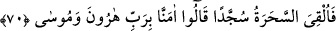
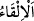

yoluyla eşyâyı ters çevirmektir. Yularların üzerinde yürümek, mumlu kağıtlarla ve
hokkalarla oynamak gibi.
Bütün bu sihirlerden sonra hâsıl olan tesirler, âdetullahın icrâsına uygun olarak ve
O’ndan başka kimsenin bilmediği onlarda bulunan hikmete göre Allah Teâlâ’nın fiilidir.
Şeyhi’l-Ekber (k.s.) el-Fütûhâtü’l-Mekkiyye’de şöyle der: “Harflerden ve Allâh’ın
isimlerinden hâsıl olan tesir, kerâmetler cinsindendir, yâni kerâmetle bâzı husûsiyetleri
ızhar etme türündendir. Çünkü, herkes eşyanın husûsiyetlerini ortaya çıkarmaya
muktedir olamaz.
70. Bunun üzerine sihirbazlar secdeye kapandılar; “Hârun’un ve Mûsâ’nın
Rabbine îman ettik.” dediler.
“Bunun üzerine sihirbazlar secdeye kapandılar;” Yani Mûsâ (a.s.), onların
büyülerini yutan asâsını yere attı da bunun üzerine büyücüler secdeye kapandılar.
Sihirbazlar sanki onları birisi yere atmış gibi şiddetle yere kapandılar.
Hz. Mûsâ asâsını yere bıraktı ve derhal bir ejderha oldu. Ağzını açtı ve sihirbazların
âletlerini yuttu. İnsanlar korkularından kaçmaya yüz tuttular. Mûsâ (a.s.) hemen
ejderhayı tuttu ve ejderha asâ oldu. Sihirbazlar onun sihir olmadığını bildiler. Çünkü
sihir başka bir sihri bâtıl kılmaz. Bu, Cenâb-ı Hakk’ın kudreti ve Mûsâ (a.s.)’ın
mûcizesidir. Onun için sihirbazlar yere kapandılar. Yâni bu mânâyı düşününce
samîmiyet ve ihlâsla Allâh’a secde ettiler.
Sihirbazların secdeye kapanmaları, kendilerini yere atmalarına uygun olması için
‘kendini yere atmak (
)’ diye ifâde edilmiştir.
Rivayet edilir ki sihirbazların reisi şöyle dedi: “Biz insanlara gâlip gelirdik,
âletlerimiz de biz de kalırdı. Eğer bu sihir idiyse bizim attığımız âletler nerede kaldı?”
Böylece o, cisimlerin durumlarının değişmesini, âlemin yaratıcısı ve her şeye kâdir olan
Allâh’a, bu mûcizenin Hz. Mûsâ’nın elinde zuhûr etmesini de onun peygamberliğinin
sahih olmasına delil saydı. Sihirbazlar tevbe ettiler ve tevâzuun zirvesine ulaştılar,
secdeye kapandılar.
Cârullah (Zemahşerî) der ki: “Sihirbazların durumu hayrete şâyândır. Küfür ve inkâr
için iplerini attılar, sonra da şükür ve secde için başlarını attılar, secdeye koydular. Bu
iki ilkâ (atma) arasında ne büyük fark vardır!”
Secdede iken “Hârun’un ve Mûsâ’nın Rabb’ine îman ettik” dediler.” Bu cümle,
açıklama için getirilmiş bir başlangıç cümlesidir.
Sihirbazların bu sözü aktarılırken Mûsâ (a.s.)’ın adının sona bırakılması, fâsılalara
(âyet sonlarındaki ses uyumuna) riâyet içindir. Yine Fir’avn, Mûsâ (a.s.)’ı
küçüklüğünde eğitmişti. Şu halde onlar burada sadece Hz. Mûsâ’nın adını ansalar ya da